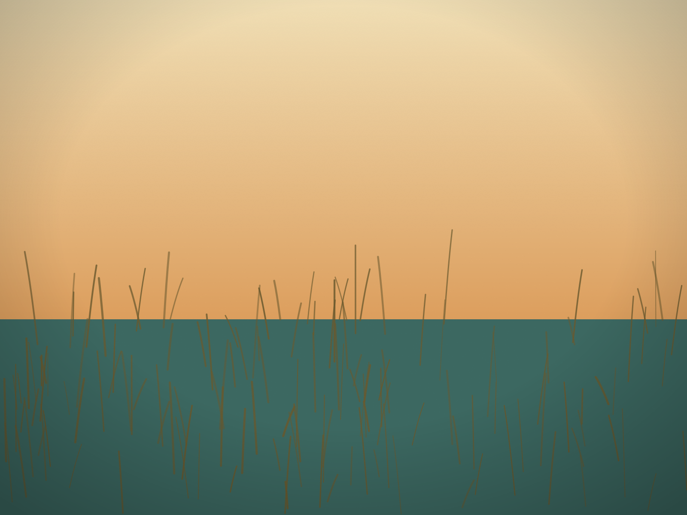

On the Delaware Bay shore north of Lewes, a wildlife refuge was rebuilt from the sand up.
A refuge for migratory birds
Prime Hook National Wildlife Refuge was established in Sussex County in 1963 under the Migratory Bird Conservation Act, as a sanctuary for migratory birds. It began as a satellite of Bombay Hook National Wildlife Refuge, its sister refuge farther up the bay. It is managed by the U.S. Fish and Wildlife Service.
What the storms did
Prime Hook sits behind a long stretch of barrier beach along the Delaware Bay. Storms broke through that beach and cut deep channels into the marsh behind it. Hurricane Sandy, in 2012, did the worst of the damage.
The restoration
The Fish and Wildlife Service's answer was a $38 million marsh restoration, completed in 2016. It was designed not just to repair the damage from Sandy but to build resilience to storms and sea-level rise into the landscape itself.
The work restored about 4,000 acres of back-barrier tidal marsh. Crews carved miles of marsh drainage channels, mostly following historic drainage patterns, and pumped about 1.1 million cubic yards of sand along some 7,000 feet of shoreline to fill the deep cuts the storms had left. The Service describes it as the largest tidal marsh restoration project ever undertaken in the eastern United States.
Why a marsh matters here
A healthy tidal marsh behind a barrier beach supports the beach itself, and it is the habitat the refuge exists to protect. The refuge was created for migrating birds, and on the Delaware Bay shore the marsh is where much of that habitat lies.
Seeing it
Prime Hook is a working refuge, and its trails, roads, hours and seasonal closures are set by the Fish and Wildlife Service. Check the refuge's current information before you go. For a wider look at the bay's refuges and how the marshes are changing, see our earlier stories on the refuge loop and on where the marsh is going.
Sources: U.S. Fish and Wildlife Service: Prime Hook National Wildlife Refuge "About Us" (fws.gov) for the 1963 establishment under the Migratory Bird Conservation Act and its origin as a satellite of Bombay Hook; the Service's "Marsh Restoration at Prime Hook National Wildlife Refuge" project page and its tidal marsh and dune restoration summary for the $38 million project completed in 2016, Hurricane Sandy, the roughly 4,000 acres, the channels, the 1.1 million cubic yards of sand along 7,000 feet of shoreline and the largest-in-the-East description. Delaware Beach Finds did not visit the refuge for this story. Access is the refuge's to set.